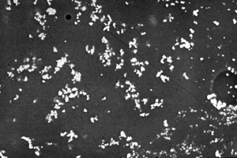

Opaque GlassesWe usually think that glass is transparent and colourless, as in our glasses and windows. In the scanning electron microscope, we can see why the coloured glasses used for medieval enamels are opaque. The glass contains millions of tiny particles, about a thousandth of a millimetre across, which stop the light passing through. These particles are made by adding the element antimony to the glass. Sometimes the particles of opacifier are themselves white or colourless. Sometimes they are coloured. For example, opaque yellow glass was due to tiny particles of lead antimonate, a yellow material. |